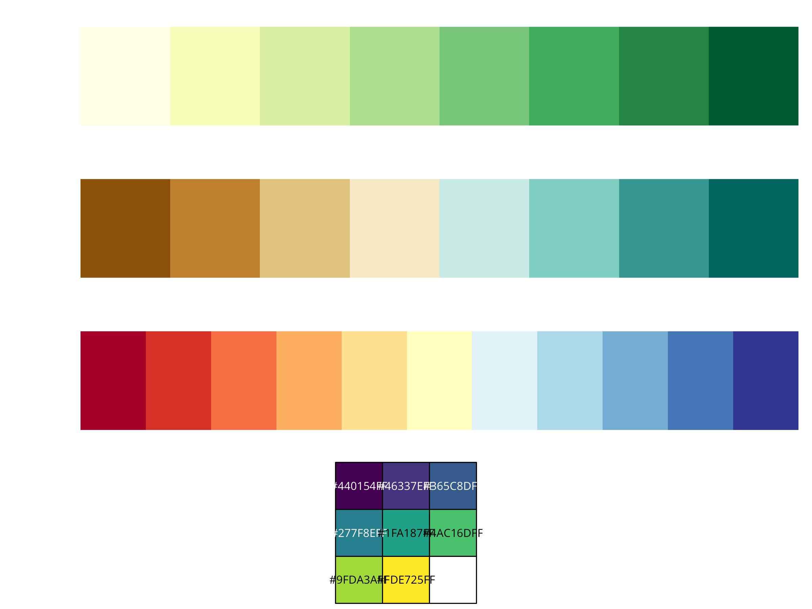
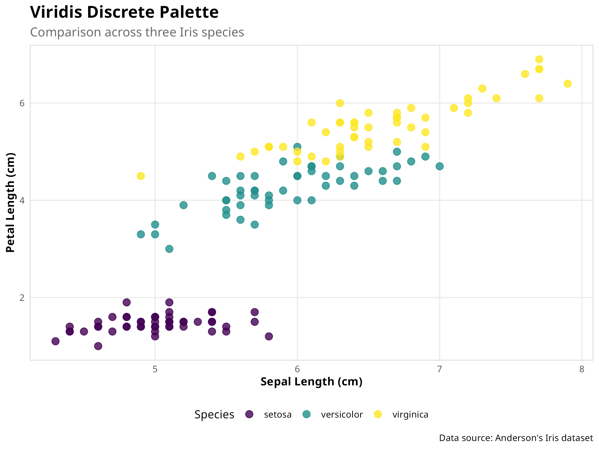

Animate visualizations to show temporal changes using gganimate
Building on the visualization techniques covered in Chapter 6, this chapter explores advanced data visualization methods that can help you communicate complex ecological data more effectively. We’ll focus on creating publication-quality graphics, interactive visualizations, and specialized plots for ecological data.
8.2 Creating Publication-Quality Graphics
8.2.1 Customizing ggplot2 Themes
The ggplot2 package allows extensive customization of plot appearance:
Code
# Load necessary packageslibrary(ggplot2)library(dplyr)# Create a basic scatter plotbase_plot<-ggplot(iris, aes(x =Sepal.Length, y =Petal.Length, color =Species))+geom_point(size =3, alpha =0.8)+labs( title ="Relationship Between Sepal and Petal Length", subtitle ="Comparison across three Iris species", x ="Sepal Length (cm)", y ="Petal Length (cm)", caption ="Data source: Anderson's Iris dataset")# Create a custom themecustom_theme<-theme_minimal()+theme(# Text elements plot.title =element_text(face ="bold", size =16), plot.subtitle =element_text(size =12, color ="gray40"), axis.title =element_text(face ="bold"),# Legend position legend.position ="bottom",# Grid lines and panel panel.grid.minor =element_blank(), panel.border =element_rect(color ="gray80", fill =NA, linewidth =0.5))# Apply the custom themebase_plot+custom_theme
Figure 8.1: Customized ggplot2 scatter plot with professional theme
Code Explanation
This code demonstrates advanced visualization customization:
Positive correlation between sepal and petal length
Different scaling relationships by species
Species-specific size ranges
Visual Effectiveness:
Clear species separation
Readable labels and legend
Professional appearance
PROFESSIONAL TIP: Advanced Visualization Techniques
When creating publication-quality visualizations:
Theme Design:
Create consistent themes
Use appropriate font sizes
Balance white space
Consider journal requirements
Aesthetic Choices:
Select meaningful colors
Use appropriate point sizes
Consider transparency
Balance visual elements
Labeling Strategy:
Include clear titles
Use informative subtitles
Provide data sources
Consider audience needs
In ecological research, you might create different custom themes for field guides, scientific publications, presentations, interactive dashboards, or reports for non-scientific audiences, each with design elements optimized for their specific purpose and audience.
8.2.2 Color Palettes for Ecological Data
Choosing appropriate color palettes is crucial for effective visualization:
Code
# Load packages for color paletteslibrary(RColorBrewer)library(viridis)# Display color palettes suitable for ecological datapar(mfrow =c(4, 1), mar =c(2, 6, 2, 1))display.brewer.pal(8, "YlGn")display.brewer.pal(8, "BrBG")display.brewer.pal(11, "RdYlBu")scales::show_col(viridis(8))# Apply different color palettes to our plotplot1<-base_plot+scale_color_brewer(palette ="Set1")+custom_theme+ggtitle("Color Brewer 'Set1' Palette")plot2<-base_plot+scale_color_viridis_d()+custom_theme+ggtitle("Viridis Discrete Palette")# Display the plotsplot1plot2# Create a plot with a sequential color palette for a continuous variableggplot(iris, aes(x =Sepal.Length, y =Petal.Length, color =Petal.Width))+geom_point(size =3, alpha =0.8)+scale_color_viridis_c()+custom_theme+labs(title ="Iris Dataset with Continuous Color Scale", subtitle ="Petal Width mapped to color", x ="Sepal Length (cm)", y ="Petal Length (cm)", color ="Petal Width (cm)")

Figure 8.2: ColorBrewer palettes for ecological data
Figure 8.3: Viridis palette display

Figure 8.4: Scatter plot with Set1 palette
Figure 8.5: Scatter plot with Viridis palette
Code Explanation
This code demonstrates how to use and apply different color palettes for ecological data visualization. Let’s break down the key components:
Loading Color Palette Packages
We load RColorBrewer, which provides a set of carefully designed color palettes.
We also load viridis, which offers perceptually uniform and colorblind-friendly palettes.
Displaying Color Palettes
We use par(mfrow = c(4, 1)) to set up a 4-row panel for displaying multiple palettes.
We display three ColorBrewer palettes that are particularly useful for ecological data:
“YlGn” (Yellow-Green): A sequential palette good for representing intensity (e.g., vegetation density)
“BrBG” (Brown-Blue-Green): A diverging palette useful for showing deviations from a midpoint (e.g., temperature anomalies)
“RdYlBu” (Red-Yellow-Blue): Another diverging palette good for environmental gradients
We also display the Viridis palette, which is designed to be perceptually uniform and colorblind-friendly.
Applying Palettes to Plots
We create two versions of our scatter plot with different color schemes:
This demonstrates how to use color to represent a third dimension in your data.
Results Interpretation
Choosing appropriate color palettes is crucial for effective ecological data visualization:
Types of Color Palettes:
Sequential palettes (like YlGn) are ideal for representing ordered data where values progress from low to high (e.g., species abundance, elevation).
Diverging palettes (like BrBG, RdYlBu) are best for data with a meaningful midpoint (e.g., temperature anomalies, pH deviations from neutral).
Qualitative palettes (like Set1) are designed for categorical data with no inherent order (e.g., species, habitat types).
Colorblind Accessibility:
The Viridis palettes are specifically designed to be perceptually uniform and accessible to people with color vision deficiencies.
This is particularly important in scientific publications where accurate interpretation of colors is crucial.
Ecological Applications:
Habitat mapping: Sequential green palettes for vegetation density
Climate data: Diverging palettes for temperature or precipitation anomalies
Species distribution: Qualitative palettes for different species
Environmental gradients: Sequential or diverging palettes for pH, elevation, or pollution levels
Practical Considerations:
Consider how your visualization will be used (digital display, print, presentation)
Test your visualizations with colorblind simulation tools
Ensure sufficient contrast between categories for clear differentiation
Use complementary visual cues (shapes, sizes) alongside color when possible
By thoughtfully selecting color palettes, you can enhance the interpretability of your ecological visualizations while ensuring they remain accessible to all audiences.
8.2.3 Arranging Multiple Plots
Combining multiple plots can help compare different aspects of your data:
Code
library(patchwork)# Create individual plotsp1<-ggplot(iris, aes(x =Species, y =Sepal.Length, fill =Species))+geom_boxplot()+labs(title ="Sepal Length by Species", x =NULL, y ="Sepal Length (cm)")+theme_minimal()+theme(legend.position ="none")p2<-ggplot(iris, aes(x =Species, y =Petal.Length, fill =Species))+geom_boxplot()+labs(title ="Petal Length by Species", x =NULL, y ="Petal Length (cm)")+theme_minimal()+theme(legend.position ="none")p3<-ggplot(iris, aes(x =Sepal.Length, fill =Species))+geom_density(alpha =0.7)+labs(title ="Sepal Length Distribution", x ="Sepal Length (cm)", y ="Density")+theme_minimal()p4<-ggplot(iris, aes(x =Petal.Length, fill =Species))+geom_density(alpha =0.7)+labs(title ="Petal Length Distribution", x ="Petal Length (cm)", y ="Density")+theme_minimal()# Arrange the plots(p1+p2)/(p3+p4)+plot_annotation( title ="Iris Morphology by Species", caption ="Source: Anderson's Iris dataset")
Figure 8.6: Multi-panel figure combining boxplots and density plots
8.3 Interactive Visualizations
Interactive visualizations allow users to explore data in more depth than static plots. In R, packages like plotly and leaflet make it easy to create interactive graphics.
8.3.1 Interactive Plots with plotly
The plotly package allows you to convert ggplot2 graphics to interactive versions:
Code
library(plotly)# Check if we're in HTML output modeif(knitr::is_html_output()){# For HTML output, use plotly directly (more compatible)plot_ly(iris, x =~Sepal.Length, y =~Petal.Length, color =~Species, type ="scatter", mode ="markers", marker =list(size =10, opacity =0.7), colors =viridis::viridis(3))|>layout(title ="Relationship between Sepal Length and Petal Length", xaxis =list(title ="Sepal Length (cm)"), yaxis =list(title ="Petal Length (cm)"))}else{# For PDF output, use static ggplot versionggplot(iris, aes(x =Sepal.Length, y =Petal.Length, color =Species))+geom_point(size =3, alpha =0.7)+labs(title ="Relationship between Sepal Length and Petal Length", x ="Sepal Length (cm)", y ="Petal Length (cm)")+theme_minimal()+scale_color_viridis_d()+annotate("text", x =6, y =6, label ="Note: Interactive version available in HTML output", fontface ="italic", size =3)}
Figure 8.7: Interactive scatter plot of iris dataset
Code Explanation
This code demonstrates how to create an interactive scatter plot using the plotly package. Let’s break down the key components:
Creating the Base ggplot2 Plot
We start by creating a standard ggplot2 scatter plot of the iris dataset, mapping Sepal Length to the x-axis, Petal Length to the y-axis, and Species to the color aesthetic.
We add styling elements like point size, transparency, informative labels, and a clean theme.
We use the Viridis color palette for better accessibility.
Converting to an Interactive Plot
We use the ggplotly() function to convert our ggplot2 object into an interactive plotly visualization.
This simple conversion adds several interactive features automatically:
For HTML output, we display the interactive plotly version.
For other formats (like PDF), we display the static ggplot2 version with a note about the interactive version.
This ensures the document works well in all output formats.
Results Interpretation
Interactive plots offer several advantages for ecological data exploration:
Data Exploration Benefits:
Detail on demand: Users can hover over points to see exact values without cluttering the visualization.
Selective viewing: Legend items can be clicked to show/hide specific groups (e.g., different species).
Focus on regions of interest: Zoom functionality allows detailed examination of specific data regions.
Ecological Applications:
Species trait analysis: Explore relationships between multiple morphological traits.
Environmental gradients: Investigate how species respond to environmental variables.
Outlier identification: Easily identify and examine unusual data points.
Data quality control: Interactive features help spot potential errors or anomalies.
Communication Advantages:
Engagement: Interactive plots engage readers more effectively than static images.
Self-guided exploration: Readers can investigate aspects of the data that interest them most.
Reduced complexity: Complex datasets can be presented more clearly when users can focus on specific elements.
Practical Considerations:
Interactive plots are only available in HTML output formats.
They may require more computational resources to render.
Always provide alternative static versions for PDF outputs or publications.
Consider accessibility for users who may rely on keyboard navigation.
PROFESSIONAL TIP: Creating Effective Interactive Visualizations
When using interactive plots in scientific communication:
Purpose-Driven Interactivity:
Add interactive elements with clear purpose, not just for novelty
Include only interactions that reveal meaningful patterns or details
Consider what specific questions users might want to answer through interaction
Performance and Compatibility:
Test interactive visualizations on different devices and browsers
Optimize for reasonable file sizes (especially for web deployment)
Provide static fallbacks for non-HTML formats and accessibility
Tooltip Design:
Include units of measurement in tooltips
Format numeric values appropriately (proper decimal places)
Include contextual information beyond just the raw values
Consider hierarchical information display (most important first)
Scientific Rigor:
Ensure interactive features don’t mislead or obscure statistical significance
Maintain appropriate axis scales during zooming
Include uncertainty or confidence intervals where applicable
Document interactive capabilities in figure captions or methods sections
8.3.2 Interactive Maps with leaflet
For spatial ecological data, interactive maps can be particularly useful:
Code
library(leaflet)library(ggplot2)library(knitr)# Create sample ecological site datasites<-data.frame( name =c("Forest Reserve", "Wetland Study Area", "Grassland Transect","Mountain Research Station", "Coastal Monitoring Site"), lat =c(37.7749, 37.8, 37.75, 37.85, 37.7), lng =c(-122.4194, -122.45, -122.5, -122.4, -122.3), habitat =c("Forest", "Wetland", "Grassland", "Alpine", "Coastal"), species_count =c(120, 85, 65, 95, 110))# Create a color palette based on habitat typehabitat_colors<-c("darkgreen", "blue", "gold", "purple", "lightblue")names(habitat_colors)<-c("Forest", "Wetland", "Grassland", "Alpine", "Coastal")if(knitr::is_html_output()){# For HTML output, create an interactive leaflet maphabitat_pal<-colorFactor( palette =habitat_colors, domain =sites$habitat)# Create an interactive mapleaflet(sites)%>%addProviderTiles("Esri.WorldTopoMap")%>%addCircleMarkers(~lng, ~lat, color =~habitat_pal(habitat), radius =~sqrt(species_count)*1.5, fillOpacity =0.7, stroke =TRUE, weight =1, popup =~paste("<b>", name, "</b><br>","Habitat: ", habitat, "<br>","Species Count: ", species_count))%>%addLegend( position ="bottomright", pal =habitat_pal, values =~habitat, title ="Habitat Type")}else{# For non-HTML output, create a static ggplot mapggplot(sites, aes(x =lng, y =lat, color =habitat, size =species_count))+borders("world", regions ="USA", fill ="gray90")+geom_point(alpha =0.7)+scale_color_manual(values =habitat_colors)+scale_size_continuous(range =c(3, 8))+coord_fixed(1.3)+theme_minimal()+labs( title ="Ecological Study Sites", subtitle ="Note: Interactive version available in HTML output", x ="Longitude", y ="Latitude", color ="Habitat Type", size ="Species Count")}
Figure 8.8: Ecological study sites across different habitat types
Code Explanation
This code creates an interactive map of ecological study sites using the leaflet package. Let’s break down the key components:
Data Preparation
We create a sample dataset of ecological study sites with location coordinates (latitude and longitude), habitat types, and species counts.
We define a custom color palette that maps habitat types to ecologically intuitive colors (e.g., green for forest, blue for wetland).
Creating the Interactive Map
We use the leaflet() function to initialize a map with our site data.
We add a topographic base map with addProviderTiles("Esri.WorldTopoMap").
We represent each study site with a circle marker using addCircleMarkers():
The marker color corresponds to the habitat type.
The marker size is proportional to the square root of the species count (a common transformation for visual scaling).
We add popups that display site details when a marker is clicked.
We include a legend with addLegend() to explain the habitat type colors.
Output Format Handling
Similar to the previous example, we check if we’re rendering to HTML.
For non-HTML formats, we create a static map using ggplot2 as a fallback.
This ensures the document is useful in all output formats.
Results Interpretation
Interactive maps offer powerful capabilities for ecological spatial data visualization:
Spatial Data Exploration:
Context awareness: Base maps provide geographical context (topography, water bodies, urban areas).
Multi-scale examination: Zoom functionality allows viewing patterns at different spatial scales.
Detailed information: Popups provide detailed site-specific information without cluttering the map.
Ecological Applications:
Field site selection: Visualize potential study locations based on habitat types and existing data.
Biodiversity hotspots: Map species richness across different locations.
Sampling design: Plan spatially balanced sampling strategies.
Stakeholder engagement: Create accessible maps for communicating with non-specialists.
Analytical Advantages:
Spatial pattern recognition: Identify clustering or dispersion of ecological phenomena.
Environmental correlations: Overlay ecological data with environmental features.
Accessibility: Make complex spatial data accessible to broader audiences.
Data integration: Combine multiple spatial datasets in a single interactive interface.
Practical Considerations:
Interactive maps require HTML output format.
Consider data privacy when mapping sensitive locations (e.g., endangered species).
Ensure color choices are meaningful and accessible.
Balance information density with clarity.
PROFESSIONAL TIP: Best Practices for Ecological Mapping
When creating interactive maps for ecological data:
Base Map Selection:
Choose base maps appropriate to your ecological context (topographic for terrestrial studies, bathymetric for marine)
Consider offline capability for field use with packages like mapview
Be aware of licensing issues for base maps in publications
Data Representation:
Use ecologically intuitive color schemes (greens for forests, blues for aquatic)
Scale markers appropriately (√n transformation for count data often works well)
Consider using multiple layers for different data types (species, environmental variables)
Add scale bars and north arrows for static versions
Sensitive Location Handling:
Deliberately obscure precise locations of endangered species or sensitive habitats
Consider using grid cells, jittering, or reduced precision for protected species
Include appropriate disclaimers about location precision
Follow relevant regulations (e.g., IUCN guidelines for endangered species)
Technical Considerations:
Test on mobile devices when field use is anticipated
Optimize popup content for readability on small screens
Include data download capabilities when appropriate
Document the coordinate reference system (CRS) used
Interactive visualizations transform static ecological data into explorable resources, allowing readers to engage more deeply with your research findings and discover patterns that might otherwise remain hidden.
8.4 Network Visualizations
{{ … }}
8.5 Chapter Summary
8.5.1 Key Concepts
Publication Quality: Customizing themes, fonts, and colors is essential for professional graphics
Composition: Combining multiple plots into a single figure helps tell a cohesive story
Interactivity: Interactive plots allow users to explore data dynamically
Spatial Visualization: Mapping is crucial for understanding geographical patterns in ecological data
Animation: Animating changes over time can reveal temporal trends effectively
In the next part of the book, we will explore Statistical Modeling, starting with regression analysis to quantify relationships between variables.
8.6 Exercises
Theme Customization: Take a basic plot from Chapter 6 and customize its theme, colors, and fonts to make it publication-ready.
Multi-Panel Figure: Create a figure with three panels: a scatter plot, a box plot, and a bar chart, arranged using patchwork.
Interactive Plot: Convert one of your static plots into an interactive version using plotly.
Map Creation: If you have spatial data, create a map showing the distribution of your study sites or species.
Animation: Create an animation showing how a variable changes over time (e.g., temperature, population size).
Source Code
---prefer-html: true---# Advanced Data Visualization## Introduction::: {.callout-note}## Learning ObjectivesBy the end of this chapter, you will be able to:1. Customize `ggplot2` themes and aesthetics for publication-quality graphics2. Create multi-panel figures using `patchwork` or `cowplot`3. Visualize spatial data using maps and `sf` objects4. Build interactive visualizations with `plotly` and `leaflet`5. Create specialized ecological plots (e.g., ordination, phylogenetics)6. Animate visualizations to show temporal changes using `gganimate`:::Building on the visualization techniques covered in Chapter 6, this chapter explores advanced data visualization methods that can help you communicate complex ecological data more effectively. We'll focus on creating publication-quality graphics, interactive visualizations, and specialized plots for ecological data.## Creating Publication-Quality Graphics### Customizing ggplot2 ThemesThe ggplot2 package allows extensive customization of plot appearance:```{r}#| label: fig-custom-theme#| fig-cap: "Customized ggplot2 scatter plot with professional theme"# Load necessary packageslibrary(ggplot2)library(dplyr)# Create a basic scatter plotbase_plot <-ggplot(iris, aes(x = Sepal.Length, y = Petal.Length, color = Species)) +geom_point(size =3, alpha =0.8) +labs(title ="Relationship Between Sepal and Petal Length",subtitle ="Comparison across three Iris species",x ="Sepal Length (cm)",y ="Petal Length (cm)",caption ="Data source: Anderson's Iris dataset" )# Create a custom themecustom_theme <-theme_minimal() +theme(# Text elementsplot.title =element_text(face ="bold", size =16),plot.subtitle =element_text(size =12, color ="gray40"),axis.title =element_text(face ="bold"),# Legend positionlegend.position ="bottom",# Grid lines and panelpanel.grid.minor =element_blank(),panel.border =element_rect(color ="gray80", fill =NA, linewidth =0.5) )# Apply the custom themebase_plot + custom_theme```::: {.callout-note}## Code ExplanationThis code demonstrates advanced visualization customization:1. **Base Plot Creation**: - Uses `ggplot()` for the foundation - Maps variables to aesthetics - Adds points with transparency - Includes comprehensive labels2. **Theme Customization**: - Creates a custom theme object - Modifies text elements - Adjusts legend position - Customizes grid and panel appearance3. **Visual Elements**: - Point size and transparency - Color coding by species - Axis labels and titles - Caption with data source:::::: {.callout-important}## Results InterpretationThe visualization reveals several key insights:1. **Species Differentiation**: - Clear clustering of species - Distinct morphological patterns - Overlap between some species2. **Morphological Relationships**: - Positive correlation between sepal and petal length - Different scaling relationships by species - Species-specific size ranges3. **Visual Effectiveness**: - Clear species separation - Readable labels and legend - Professional appearance:::::: {.callout-tip}## PROFESSIONAL TIP: Advanced Visualization TechniquesWhen creating publication-quality visualizations:1. **Theme Design**: - Create consistent themes - Use appropriate font sizes - Balance white space - Consider journal requirements2. **Aesthetic Choices**: - Select meaningful colors - Use appropriate point sizes - Consider transparency - Balance visual elements3. **Labeling Strategy**: - Include clear titles - Use informative subtitles - Provide data sources - Consider audience needs:::In ecological research, you might create different custom themes for field guides, scientific publications, presentations, interactive dashboards, or reports for non-scientific audiences, each with design elements optimized for their specific purpose and audience.### Color Palettes for Ecological DataChoosing appropriate color palettes is crucial for effective visualization:```{r}#| label: fig-color-palettes#| fig-cap:#| - "ColorBrewer palettes for ecological data"#| - "Viridis palette display"#| - "Scatter plot with Set1 palette"#| - "Scatter plot with Viridis palette"#| - "Continuous color scale example"# Load packages for color paletteslibrary(RColorBrewer)library(viridis)# Display color palettes suitable for ecological datapar(mfrow =c(4, 1), mar =c(2, 6, 2, 1))display.brewer.pal(8, "YlGn")display.brewer.pal(8, "BrBG")display.brewer.pal(11, "RdYlBu")scales::show_col(viridis(8))# Apply different color palettes to our plotplot1 <- base_plot +scale_color_brewer(palette ="Set1") + custom_theme +ggtitle("Color Brewer 'Set1' Palette")plot2 <- base_plot +scale_color_viridis_d() + custom_theme +ggtitle("Viridis Discrete Palette")# Display the plotsplot1plot2# Create a plot with a sequential color palette for a continuous variableggplot(iris, aes(x = Sepal.Length, y = Petal.Length, color = Petal.Width)) +geom_point(size =3, alpha =0.8) +scale_color_viridis_c() + custom_theme +labs(title ="Iris Dataset with Continuous Color Scale",subtitle ="Petal Width mapped to color",x ="Sepal Length (cm)",y ="Petal Length (cm)",color ="Petal Width (cm)")```::: {.callout-note}## Code ExplanationThis code demonstrates how to use and apply different color palettes for ecological data visualization. Let's break down the key components:1. **Loading Color Palette Packages** - We load `RColorBrewer`, which provides a set of carefully designed color palettes. - We also load `viridis`, which offers perceptually uniform and colorblind-friendly palettes.2. **Displaying Color Palettes** - We use `par(mfrow = c(4, 1))` to set up a 4-row panel for displaying multiple palettes. - We display three ColorBrewer palettes that are particularly useful for ecological data: - "YlGn" (Yellow-Green): A sequential palette good for representing intensity (e.g., vegetation density) - "BrBG" (Brown-Blue-Green): A diverging palette useful for showing deviations from a midpoint (e.g., temperature anomalies) - "RdYlBu" (Red-Yellow-Blue): Another diverging palette good for environmental gradients - We also display the Viridis palette, which is designed to be perceptually uniform and colorblind-friendly.3. **Applying Palettes to Plots** - We create two versions of our scatter plot with different color schemes: - One using ColorBrewer's "Set1" palette with `scale_color_brewer()` - Another using the Viridis discrete palette with `scale_color_viridis_d()` - We add our custom theme and appropriate titles to each plot.4. **Continuous Color Mapping** - We create a third plot that maps a continuous variable (Petal Width) to color. - We use `scale_color_viridis_c()` for a continuous color scale that is perceptually uniform. - This demonstrates how to use color to represent a third dimension in your data.:::::: {.callout-important}## Results InterpretationChoosing appropriate color palettes is crucial for effective ecological data visualization:1. **Types of Color Palettes**: - **Sequential palettes** (like YlGn) are ideal for representing ordered data where values progress from low to high (e.g., species abundance, elevation). - **Diverging palettes** (like BrBG, RdYlBu) are best for data with a meaningful midpoint (e.g., temperature anomalies, pH deviations from neutral). - **Qualitative palettes** (like Set1) are designed for categorical data with no inherent order (e.g., species, habitat types).2. **Colorblind Accessibility**: - The Viridis palettes are specifically designed to be perceptually uniform and accessible to people with color vision deficiencies. - This is particularly important in scientific publications where accurate interpretation of colors is crucial.3. **Ecological Applications**: - **Habitat mapping**: Sequential green palettes for vegetation density - **Climate data**: Diverging palettes for temperature or precipitation anomalies - **Species distribution**: Qualitative palettes for different species - **Environmental gradients**: Sequential or diverging palettes for pH, elevation, or pollution levels4. **Practical Considerations**: - Consider how your visualization will be used (digital display, print, presentation) - Test your visualizations with colorblind simulation tools - Ensure sufficient contrast between categories for clear differentiation - Use complementary visual cues (shapes, sizes) alongside color when possible:::By thoughtfully selecting color palettes, you can enhance the interpretability of your ecological visualizations while ensuring they remain accessible to all audiences.### Arranging Multiple PlotsCombining multiple plots can help compare different aspects of your data:```{r}#| label: fig-multi-panel#| fig-cap: "Multi-panel figure combining boxplots and density plots"library(patchwork)# Create individual plotsp1 <-ggplot(iris, aes(x = Species, y = Sepal.Length, fill = Species)) +geom_boxplot() +labs(title ="Sepal Length by Species",x =NULL,y ="Sepal Length (cm)") +theme_minimal() +theme(legend.position ="none")p2 <-ggplot(iris, aes(x = Species, y = Petal.Length, fill = Species)) +geom_boxplot() +labs(title ="Petal Length by Species",x =NULL,y ="Petal Length (cm)") +theme_minimal() +theme(legend.position ="none")p3 <-ggplot(iris, aes(x = Sepal.Length, fill = Species)) +geom_density(alpha =0.7) +labs(title ="Sepal Length Distribution",x ="Sepal Length (cm)",y ="Density") +theme_minimal()p4 <-ggplot(iris, aes(x = Petal.Length, fill = Species)) +geom_density(alpha =0.7) +labs(title ="Petal Length Distribution",x ="Petal Length (cm)",y ="Density") +theme_minimal()# Arrange the plots(p1 + p2) / (p3 + p4) +plot_annotation(title ="Iris Morphology by Species",caption ="Source: Anderson's Iris dataset" )```## Interactive VisualizationsInteractive visualizations allow users to explore data in more depth than static plots. In R, packages like `plotly` and `leaflet` make it easy to create interactive graphics.### Interactive Plots with plotlyThe `plotly` package allows you to convert ggplot2 graphics to interactive versions:```{r}#| label: fig-interactive-plotly#| fig-width: 8#| fig-height: 6#| fig-cap: "Interactive scatter plot of iris dataset"library(plotly)# Check if we're in HTML output modeif (knitr::is_html_output()) {# For HTML output, use plotly directly (more compatible)plot_ly(iris, x =~Sepal.Length, y =~Petal.Length, color =~Species,type ="scatter", mode ="markers",marker =list(size =10, opacity =0.7),colors = viridis::viridis(3)) |>layout(title ="Relationship between Sepal Length and Petal Length",xaxis =list(title ="Sepal Length (cm)"),yaxis =list(title ="Petal Length (cm)"))} else {# For PDF output, use static ggplot versionggplot(iris, aes(x = Sepal.Length, y = Petal.Length, color = Species)) +geom_point(size =3, alpha =0.7) +labs(title ="Relationship between Sepal Length and Petal Length",x ="Sepal Length (cm)",y ="Petal Length (cm)") +theme_minimal() +scale_color_viridis_d() +annotate("text", x =6, y =6,label ="Note: Interactive version available in HTML output",fontface ="italic", size =3)}```::: {.callout-note}## Code ExplanationThis code demonstrates how to create an interactive scatter plot using the `plotly` package. Let's break down the key components:1. **Creating the Base ggplot2 Plot** - We start by creating a standard ggplot2 scatter plot of the iris dataset, mapping Sepal Length to the x-axis, Petal Length to the y-axis, and Species to the color aesthetic. - We add styling elements like point size, transparency, informative labels, and a clean theme. - We use the Viridis color palette for better accessibility.2. **Converting to an Interactive Plot** - We use the `ggplotly()` function to convert our ggplot2 object into an interactive plotly visualization. - This simple conversion adds several interactive features automatically: - Hover tooltips showing data values - Zoom and pan capabilities - Ability to toggle legend items - Download options for saving the plot3. **Output Format Handling** - We use `knitr::is_html_output()` to check if we're rendering to HTML format. - For HTML output, we display the interactive plotly version. - For other formats (like PDF), we display the static ggplot2 version with a note about the interactive version. - This ensures the document works well in all output formats.:::::: {.callout-important}## Results InterpretationInteractive plots offer several advantages for ecological data exploration:1. **Data Exploration Benefits**: - **Detail on demand**: Users can hover over points to see exact values without cluttering the visualization. - **Selective viewing**: Legend items can be clicked to show/hide specific groups (e.g., different species). - **Focus on regions of interest**: Zoom functionality allows detailed examination of specific data regions.2. **Ecological Applications**: - **Species trait analysis**: Explore relationships between multiple morphological traits. - **Environmental gradients**: Investigate how species respond to environmental variables. - **Outlier identification**: Easily identify and examine unusual data points. - **Data quality control**: Interactive features help spot potential errors or anomalies.3. **Communication Advantages**: - **Engagement**: Interactive plots engage readers more effectively than static images. - **Self-guided exploration**: Readers can investigate aspects of the data that interest them most. - **Reduced complexity**: Complex datasets can be presented more clearly when users can focus on specific elements.4. **Practical Considerations**: - Interactive plots are only available in HTML output formats. - They may require more computational resources to render. - Always provide alternative static versions for PDF outputs or publications. - Consider accessibility for users who may rely on keyboard navigation.:::::: {.callout-tip}## PROFESSIONAL TIP: Creating Effective Interactive VisualizationsWhen using interactive plots in scientific communication:1. **Purpose-Driven Interactivity**: - Add interactive elements with clear purpose, not just for novelty - Include only interactions that reveal meaningful patterns or details - Consider what specific questions users might want to answer through interaction2. **Performance and Compatibility**: - Test interactive visualizations on different devices and browsers - Optimize for reasonable file sizes (especially for web deployment) - Provide static fallbacks for non-HTML formats and accessibility3. **Tooltip Design**: - Include units of measurement in tooltips - Format numeric values appropriately (proper decimal places) - Include contextual information beyond just the raw values - Consider hierarchical information display (most important first)4. **Scientific Rigor**: - Ensure interactive features don't mislead or obscure statistical significance - Maintain appropriate axis scales during zooming - Include uncertainty or confidence intervals where applicable - Document interactive capabilities in figure captions or methods sections:::### Interactive Maps with leafletFor spatial ecological data, interactive maps can be particularly useful:```{r}#| label: fig-interactive-map#| fig-width: 8#| fig-height: 6#| fig-cap: "Ecological study sites across different habitat types"library(leaflet)library(ggplot2)library(knitr)# Create sample ecological site datasites <-data.frame(name =c("Forest Reserve", "Wetland Study Area", "Grassland Transect","Mountain Research Station", "Coastal Monitoring Site"),lat =c(37.7749, 37.8, 37.75, 37.85, 37.7),lng =c(-122.4194, -122.45, -122.5, -122.4, -122.3),habitat =c("Forest", "Wetland", "Grassland", "Alpine", "Coastal"),species_count =c(120, 85, 65, 95, 110))# Create a color palette based on habitat typehabitat_colors <-c("darkgreen", "blue", "gold", "purple", "lightblue")names(habitat_colors) <-c("Forest", "Wetland", "Grassland", "Alpine", "Coastal")if (knitr::is_html_output()) {# For HTML output, create an interactive leaflet map habitat_pal <-colorFactor(palette = habitat_colors,domain = sites$habitat )# Create an interactive mapleaflet(sites) %>%addProviderTiles("Esri.WorldTopoMap") %>%addCircleMarkers(~lng, ~lat,color =~habitat_pal(habitat),radius =~sqrt(species_count) *1.5,fillOpacity =0.7,stroke =TRUE,weight =1,popup =~paste("<b>", name, "</b><br>","Habitat: ", habitat, "<br>","Species Count: ", species_count) ) %>%addLegend(position ="bottomright",pal = habitat_pal,values =~habitat,title ="Habitat Type" )} else {# For non-HTML output, create a static ggplot mapggplot(sites, aes(x = lng, y = lat, color = habitat, size = species_count)) +borders("world", regions ="USA", fill ="gray90") +geom_point(alpha =0.7) +scale_color_manual(values = habitat_colors) +scale_size_continuous(range =c(3, 8)) +coord_fixed(1.3) +theme_minimal() +labs(title ="Ecological Study Sites",subtitle ="Note: Interactive version available in HTML output",x ="Longitude",y ="Latitude",color ="Habitat Type",size ="Species Count" )}```::: {.callout-note}## Code ExplanationThis code creates an interactive map of ecological study sites using the `leaflet` package. Let's break down the key components:1. **Data Preparation** - We create a sample dataset of ecological study sites with location coordinates (latitude and longitude), habitat types, and species counts. - We define a custom color palette that maps habitat types to ecologically intuitive colors (e.g., green for forest, blue for wetland).2. **Creating the Interactive Map** - We use the `leaflet()` function to initialize a map with our site data. - We add a topographic base map with `addProviderTiles("Esri.WorldTopoMap")`. - We represent each study site with a circle marker using `addCircleMarkers()`: - The marker color corresponds to the habitat type. - The marker size is proportional to the square root of the species count (a common transformation for visual scaling). - We add popups that display site details when a marker is clicked. - We include a legend with `addLegend()` to explain the habitat type colors.3. **Output Format Handling** - Similar to the previous example, we check if we're rendering to HTML. - For non-HTML formats, we create a static map using ggplot2 as a fallback. - This ensures the document is useful in all output formats.:::::: {.callout-important}## Results InterpretationInteractive maps offer powerful capabilities for ecological spatial data visualization:1. **Spatial Data Exploration**: - **Context awareness**: Base maps provide geographical context (topography, water bodies, urban areas). - **Multi-scale examination**: Zoom functionality allows viewing patterns at different spatial scales. - **Detailed information**: Popups provide detailed site-specific information without cluttering the map.2. **Ecological Applications**: - **Field site selection**: Visualize potential study locations based on habitat types and existing data. - **Biodiversity hotspots**: Map species richness across different locations. - **Sampling design**: Plan spatially balanced sampling strategies. - **Stakeholder engagement**: Create accessible maps for communicating with non-specialists.3. **Analytical Advantages**: - **Spatial pattern recognition**: Identify clustering or dispersion of ecological phenomena. - **Environmental correlations**: Overlay ecological data with environmental features. - **Accessibility**: Make complex spatial data accessible to broader audiences. - **Data integration**: Combine multiple spatial datasets in a single interactive interface.4. **Practical Considerations**: - Interactive maps require HTML output format. - Consider data privacy when mapping sensitive locations (e.g., endangered species). - Ensure color choices are meaningful and accessible. - Balance information density with clarity.:::::: {.callout-tip}## PROFESSIONAL TIP: Best Practices for Ecological MappingWhen creating interactive maps for ecological data:1. **Base Map Selection**: - Choose base maps appropriate to your ecological context (topographic for terrestrial studies, bathymetric for marine) - Consider offline capability for field use with packages like `mapview` - Be aware of licensing issues for base maps in publications2. **Data Representation**: - Use ecologically intuitive color schemes (greens for forests, blues for aquatic) - Scale markers appropriately (√n transformation for count data often works well) - Consider using multiple layers for different data types (species, environmental variables) - Add scale bars and north arrows for static versions3. **Sensitive Location Handling**: - Deliberately obscure precise locations of endangered species or sensitive habitats - Consider using grid cells, jittering, or reduced precision for protected species - Include appropriate disclaimers about location precision - Follow relevant regulations (e.g., IUCN guidelines for endangered species)4. **Technical Considerations**: - Test on mobile devices when field use is anticipated - Optimize popup content for readability on small screens - Include data download capabilities when appropriate - Document the coordinate reference system (CRS) used:::Interactive visualizations transform static ecological data into explorable resources, allowing readers to engage more deeply with your research findings and discover patterns that might otherwise remain hidden.## Network Visualizations{{ ... }}## Chapter Summary### Key Concepts- **Publication Quality**: Customizing themes, fonts, and colors is essential for professional graphics- **Composition**: Combining multiple plots into a single figure helps tell a cohesive story- **Interactivity**: Interactive plots allow users to explore data dynamically- **Spatial Visualization**: Mapping is crucial for understanding geographical patterns in ecological data- **Animation**: Animating changes over time can reveal temporal trends effectively### R Functions Learned- `theme()` - Customize plot appearance- `ggsave()` - Save plots in high resolution- `patchwork` / `cowplot` - Combine multiple plots- `ggplotly()` - Convert static plots to interactive ones- `geom_sf()` - Visualize spatial data- `transition_time()` - Animate plots over time### Next StepsIn the next part of the book, we will explore **Statistical Modeling**, starting with regression analysis to quantify relationships between variables.## Exercises1. **Theme Customization**: Take a basic plot from Chapter 6 and customize its theme, colors, and fonts to make it publication-ready.2. **Multi-Panel Figure**: Create a figure with three panels: a scatter plot, a box plot, and a bar chart, arranged using `patchwork`.3. **Interactive Plot**: Convert one of your static plots into an interactive version using `plotly`.4. **Map Creation**: If you have spatial data, create a map showing the distribution of your study sites or species.5. **Animation**: Create an animation showing how a variable changes over time (e.g., temperature, population size).